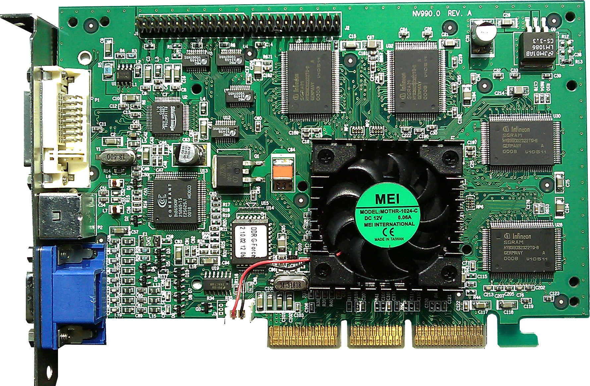

Я работаю с GPU каждый день — запускаю модели, считаю инференс, жду пока обучится очередной эксперимент. Но долгое время для меня GPU был чёрным ящиком: закинул модель, нажал кнопку, ждёшь. А мне хочется понимать, что будет происходить дальше с миром AI — и я понял, что без понимания железа это невозможно. Я уже пытался предсказать, когда видеогенерация станет реалтаймовой — получилось неплохо, и мне захотелось погрузиться вглубь: а что вообще стоит за GPU?
А ведь решения в мире AI сейчас принимают те же люди, которые проектировали GPU. Если разобраться, почему они принимали именно такие решения на каждом этапе — можно научиться самому прогнозировать, куда всё движется. Ну и заодно построить ментальную модель GPU, которой мне так не хватало.
(а теперь SEO оптимизация) NVIDIA стоит дороже всех компаний мира. H100 продаётся за $30 000. И всё это — из-за процессора, который 25 лет назад рисовал треугольники в компьютерных играх. Как мы сюда попали — разбираемся с нуля. #NVIDIA #GPU #AI
Глава I
Для меня не секрет, что GPU были созданы для игр — первое что я узнал про видеокарты, это как раз NVIDIA 9800 GT, которые позволяли мне запускать любимые Assassin's Creed и Call of Duty. Но как понадобилось отдельное железо для отрисовки картинок?
Первые компьютеры общались с человеком только текстом — зелёные буквы на чёрном экране. Zork (1977) — один из первых хитов: ты печатаешь open mailbox и получаешь текстовое описание того, что внутри. Такой DnD-симулятор квестов. Я их не люблю, и видимо не я один — потому что довольно быстро появились первые графические игры.
1977 · текст · 0 пикселей графики
В начале 80-х появились спрайты — заранее нарисованные картинки, которые просто двигаются по экрану. Super Mario Bros (1985), Sonic (1991) — целые яркие миры, собранные из плоских кирпичиков. Это намного круче текстовых игр, но и плата — повышенные вычислительные аппетиты. Впрочем, со спрайтами терпимо: компьютер просто копирует готовые блоки в нужные позиции, 60 раз в секунду. Никаких вычислений «как это должно выглядеть» — только «куда положить картинку».
1985 · спрайты двигаются по экрану — копирование готовых блоков
Но плоские картинки не передают глубину. Wolfenstein 3D (1992) и Doom (1993) красиво это обошли — мир хранился как плоская карта, а движок рисовал столбцы стен по расстоянию. Гениальный трюк, но в Doom нельзя даже посмотреть вверх — третьего измерения буквально нет. Настоящий прорыв — Quake (1996): полностью трёхмерный мир из полигонов. Свободная камера, текстуры, освещение — и всё собрано из сотен треугольников, каждый из которых нужно трансформировать, раскрасить и отрисовать. 30 раз в секунду.
1996 · 3D полигоны · трансформация + освещение каждого пикселя
Давайте заглянем под капот. Quake на экране: игрок в коридоре, стены с текстурами, факел, в дверном проёме — враг. Камера может повернуться куда угодно. Всё это нужно превратить в картинку — 640 на 480 пикселей, 30 раз в секунду. У компьютера 33 миллисекунды на один кадр.
Что происходит за эти 33 миллисекунды? Берём все треугольники сцены, пересчитываем координаты из 3D в плоские экранные. Определяем, какие пиксели попадают внутрь каждого треугольника. И для каждого из 307 200 пикселей считаем цвет: читаем текстуру, считаем освещение, проверяем глубину. Это дофига математических операций — возьми одно число, умножь на второе, сложи с третьим, и так для каждого пикселя.
Анимация — как рисуется один кадр
640×480 · 30 fps · ~300M операций/сек. CPU рисует каждый пиксель последовательно.
Посчитаем. 640 × 480 = 307 200 пикселей. На каждый — 20–50 операций. На один кадр выходит 10–15 миллионов операций. Умножаем на 30 fps — 300–450 миллионов операций каждую секунду.
Pentium 200 МГц — топовый процессор 1996 года — выдавал около 200 миллионов инструкций в секунду. Уже на грани. Но в реальности всё ещё хуже: каждый пиксель лезет в текстуру — изображение, натянутое на треугольник. Адрес непредсказуем, в кэше данных почти наверняка нет. Кэш-промах — процессор стоит и ждёт 50–100 наносекунд, пока память ответит. Десятки потерянных тактов. На каждый пиксель. Реальная производительность падает в 2–3 раза. Прям мега грустно. CPU явно не справляется — нужно отдельное железо для графики.
Рынок это понял быстро. В середине 90-х появились первые графические ускорители: 3dfx Voodoo, ATI Rage, S3 ViRGE. Идея простая — вынести графические операции с CPU на отдельный чип. Но транзисторов мало, жили бедно, поэтому операции напрямую впаивали в кремний. Voodoo умел растеризировать и накладывать текстуры — и только это. Трансформация вершин? Всё ещё на CPU. ATI Rage умел и то, и другое, но только с одним источником света. S3 ViRGE вообще оказался медленнее программного рендеринга. Каждый чип — фиксированный набор функций. Хочешь эффект, которого в чипе нет — мечтай.
Для разработчика — кошмар. Каждая карта говорит на своём языке: свои регистры, свои команды. Написал игру под 3dfx — на ATI она не работает. Вышла новая карта — переписывай всё заново.
OpenGL (1992) и DirectX (1995, эхх, сколько его приходилось ставить) частично решили проблему совместимости: разработчик вызывает стандартную функцию вроде DrawTriangle, а драйвер переводит её в команды конкретного чипа. Один код → любое железо.
Но проблема fixed-function никуда не делась. Каждый ускоритель умел только то, что в него зашили. Хочешь новый эффект — жди следующее поколение чипов. И ни один из них не покрывал весь конвейер целиком: часть работы всё равно падала на CPU.
Нужен был другой подход.
Глава II
Ок, хотим спроектировать ускоритель — надо сначала понять, что именно ускоряем. Рендеринг кадра — это конвейер. Сначала каждую вершину треугольника пересчитываем из 3D в экранные координаты — матричное умножение 4×4. Потом определяем, какие пиксели попадают внутрь треугольника — растеризация. И для каждого пикселя считаем цвет: текстура, освещение, глубина.
И вот ключевое наблюдение, из которого родился GPU: на каждом этапе — тысячи операций, и все они независимы. Один пиксель не ждёт результата другого. Одна вершина не зависит от соседней. Формула одинаковая, данные разные, всё независимо. Когда это слово встречается — стоит подумать о параллелизме. Осталось спроектировать процессор, который умеет именно это.
Внутри CPU — нажми на блок
А как с параллелизмом у CPU? Спойлер — всё плохо. Большая часть транзисторов CPU — это не вычисления, а управление. Предсказание ветвлений, переупорядочивание инструкций, кэши. Это делает CPU невероятно умным для сложных последовательных задач — как гений-одиночка. Но это как заставить профессора математики считать на калькуляторе. Он справится, но это не его сильная сторона. Нам не нужно предсказывать ветвления — формула для каждого пикселя одинаковая. Не нужно переставлять инструкции — все потоки делают одно и то же. Не нужны огромные кэши — данные всё равно непредсказуемы. Чисто вычислительная часть CPU занимает ~20% площади — ALU, арифметико-логическое устройство. Единственный блок, который реально считает.
Ну вы как умный человек подумаете — мало вычислений? Давайте сделаем больше вычислений. Забьём весь чип ALU и всё будет по кайфу. И будете правы.
Берём CPU, выкидываем всё «умное», оставляем только ALU. На освободившуюся площадь можно уместить не одно ALU с обвязкой, а десятки голых. Каждый проще, каждый медленнее — но их много, и они работают одновременно. Не один умный процессор — целая армия простых.
Окей, у нас десятки ALU на одном кристалле. Но сразу столкнёмся с проблемой — блин, а как ими управлять? Если каждому дать свой декодер команд, свой счётчик инструкций, свою управляющую логику — мы опять потратим кучу транзисторов на управление. Тут погорячились — вернулись к тому, от чего убежали.
Но вспомним нашу задачу: все пиксели считаются одной и той же формулой. Цвет пикселя 0 — как цвет пикселя 31, просто входные данные разные. Значит, можно проще: один декодер команд на группу ALU. Читает инструкцию один раз — все ALU в группе выполняют её одновременно, каждый со своими данными. Это SIMD — Single Instruction, Multiple Data. Все делают одно и то же.
В GPU NVIDIA такая группа — warp, 32 потока. Почему 32? Компромисс: больше группа — дешевле управление, но больше проблем когда потоки хотят делать разные вещи. Итого: один декодер, 32 ALU, одна инструкция — все считают параллельно. Проблему управления решили.
Но есть нюанс. Что если в коде if/else? При рендеринге Quake проверяем, попадает ли пиксель в тень. Часть из 32 пикселей в тени, часть на свету — а декодер-то один, он не может выполнять разные инструкции одновременно.
Решение элегантное (и немного безумное): GPU выполняет обе ветки на всех 32 ALU, но с маскированием. Прогоняет ветку «в тени» — все 32 считают, но результаты пикселей на свету отбрасываются. Потом «на свету» — то же самое наоборот. Два такта вместо одного, часть работы впустую. Это warp divergence. Для графики терпимо — соседние пиксели обычно в одной ветке.
У нас массив ALU, объединённых в warps. Они считают быстро. Но есть узкое место: память. Когда шейдер обращается к текстуре — а это происходит для каждого пикселя — данные нужно прочитать из видеопамяти. А видеопамять медленная по сравнению с процессором: запрос и ответ занимают 200–400 тактов. Всё это время 32 ALU в warp стоят и ждут. Ничего не считают. Чистый простой. (Кстати, проблемы с HBM у H100 взялись не из ниоткуда — перегонять данные с памяти на чип было дорого ещё тогда.)
CPU решает это кэшами — держит данные поближе. Но мы же выкинули большие кэши, когда проектировали GPU. Как быть?
Решение красивое. Вместо того чтобы прятать задержку — GPU заполняет её полезной работой. На одном процессорном блоке (SM — Streaming Multiprocessor) GPU держит в регистрах состояние не одного warp, а десятков. Переключение — за один такт, без накладных расходов. Warp A запросил текстуру и ждёт? GPU переключается на warp B. Потом C. Потом D. К моменту, когда данные для A приходят из памяти — очередь как раз до него дошла. Простои, чтобы от них избавиться — GPU просто делает другую работу, пока ждёт.
Чем больше warps в полёте — тем лучше скрывается задержка. Задержка 200 тактов, один warp считается 60 — значит, нужно минимум 4 в очереди. В реальности GPU держит 32–64 warps на одном SM и почти никогда не простаивает. Важнейший принцип — запоминаем.
CPU прячет задержку кэшами — хранит данные рядом. GPU — переключением потоков: пока один ждёт, другой считает.
Подробнее об архитектуре GPU, warps и latency hiding — в бесплатном курсе Cornell Virtual Workshop: Understanding GPU Architecture.
Оглянемся. За три шага мы спроектировали новый тип процессора. Выкинули из CPU всё лишнее для графики — предсказание ветвлений, перестановку инструкций, огромные кэши. Забили площадь десятками простых ALU. Объединили их в группы с общим декодером — SIMD. Проблему медленной памяти решили переключением между потоками. Это и есть GPU.
Именно так рассуждали инженеры NVIDIA в конце 90-х. Складываем всё вместе — и в 1999 году появляется GeForce 256. Они сами назвали его «первым в мире GPU». 17 миллионов транзисторов, 120 МГц, 10 миллионов полигонов в секунду. Главное — аппаратный Transform & Lighting: трансформации вершин и расчёт освещения впервые целиком переехали с CPU на видеокарту. Один чип — весь конвейер рендеринга.

NVIDIA GeForce 256 (1999) · 17M транзисторов · 120 МГц · 10M полигонов/с · фото: Wikimedia Commons, public domain
Глава III
Мы нанесли удар по скорости вычислений — больше транзисторов, больше ALU, красота. Но была другая проблема: всё зашито в кремний. Хочешь другой эффект? Жди новый чип.
Почему вообще зашивали? Бюджет транзисторов — 17 миллионов, каждый на счету. Вот конкретный пример. Берём один пиксель на стене в Quake рядом с факелом. Чтобы вычислить его цвет, чип проводит пиксель через цепочку зашитых операций:
Проблема конкретная. Та формула, которую мы только что видели — она считает освещение стены. Свет падает, отражается, получается блик. Для кирпичной стены в Quake — отлично. Но вода отражает и преломляет свет совсем иначе. Кожа рассеивает свет под поверхностью. Металл — резкий блик, а мех — мягкий. Для каждого материала нужна своя формула. А в чипе зашита одна. И зашить все варианты в кремний невозможно — их слишком много.
Но рост числа транзисторов помог: 17М (1999) → 57М (2001) → 107М (2002). Появился бюджет для эксперимента.
И таким образом появились шейдеры — небольшие программы, которые пишет разработчик, а GPU исполняет для каждой вершины или пикселя. Разница принципиальная: в fixed-function транзисторы соединены проводами в определённом порядке — чип всегда выполняет ровно ту цепочку, которую впаяли на заводе. В шейдерной модели на чипе стоит универсальный ALU + память для инструкций. Перед рендерингом загружаешь туда свою программу — любую. Тот же ALU может посчитать и стену, и воду, и кожу — просто загрузи другую формулу. Заскейлились:
Рост программируемости: от 128 инструкций без ветвлений до полноценного процессора за 3 года.
Shader Model 1.0 (2001, GeForce 3) — до 128 инструкций, нет ветвлений. По сути тот же fixed-function, только можно переставить шаги. Программируемый блок в 2-3 раза медленнее зашитого — гибкость стоит дорого.
Shader Model 2.0 (2002, Radeon 9700) — 256 инструкций, впервые if/else. Уже можно писать реальную логику, overhead меньше.
Shader Model 3.0 (2004, GeForce 6) — до 65 000 инструкций, циклы, динамическое ветвление. Полноценный процессор. Overhead стал настолько маленьким, что драйверы начали эмулировать fixed-function через шейдеры — зашитые блоки буквально потеряли смысл.
Нафиг тогда в железо операции зашивать, если программно почти так же быстро и ещё миллион вещей умеет? Гибкость победила.
GPU из «калькулятора с кнопками» превратился в «программируемый калькулятор».
Следующий логичный шаг — все блоки на чипе стали одинаковыми. 128 универсальных блоков, планировщик сам раскидывает задачи. Утилизация близка к 100%.
И тут инженеры NVIDIA осознали кое-что поинтереснее. Если все 128 блоков умеют любую математику — это уже не видеокарта. Это массивно-параллельный вычислитель общего назначения. Игровая оптимизация случайно создала суперкомпьютер на видеокарте.
Ок, у нас суперкомпьютер на видеокарте. Но попасть на него можно было только через графический API — OpenGL или DirectX. Хочешь посчитать уравнение? Данные закодируй как текстуру, вычисление оформи как шейдер, результат прочитай обратно как картинку. Учёный буквально притворяется что рисует картинку, чтобы GPU посчитал ему физику. Напоминает Infinite Storage Glitch — проект, где ребята кодируют файлы в пиксели видео и заливают на YouTube как бесплатное облачное хранилище. Платформа для видео, но технически стримит любые байты. Абсурд, но работает.
Решение появилось довольно быстро. В 2004 году Ian Buck в Стэнфорде сделал Brook — первый язык для GPU без графического API. Корявый, ограниченный — но доказал что идея работает. NVIDIA его наняла, и уже в 2007 вышла CUDA.
Что изменилось принципиально? Вместо "закодируй данные как текстуру, притворись что рисуешь" — три простые идеи:
1. Просто напиши функцию — помечаешь её __global__ и говоришь "запусти на 10 000 потоков". Всё. GPU сам раскидает по ядрам.
2. Иерархия потоков — threads собираются в blocks, blocks в grid. Ты думаешь о структуре задачи, а не о железе. А помните warps из Главы II? Вот как это связано: ты говоришь "блок из 256 потоков", а GPU внутри нарезает его на warps по 32 — те самые группы с общим декодером и SIMD. Программист управляет блоками, GPU управляет warps.
3. Потоки общаются — внутри блока есть быстрая shared memory. Потоки могут обмениваться данными напрямую, не гоняя их через медленную глобальную память.
По факту — пишешь нормальный C-код, помечаешь функцию __global__, компилируешь через nvcc и запускаешь. Те же 128 ядер считают твою задачу. Без текстур, без треугольников, без притворства. Просто математика.
Железо не изменилось — изменилось то, как ты с ним разговариваешь. И учёные это оценили быстро, потому что паттерн тот же что в графике: одна формула на миллионы точек.
GPU стал универсальным вычислителем. Но каждая новая задача обнажала слабые места — и требовала новых решений в железе.
Глава IV
Ок, у нас универсальный параллельный вычислитель с нормальным интерфейсом. Победа? Не совсем. Каждый раз когда учёные и инженеры начинали реально использовать GPU — они находили новую проблему. И каждое поколение архитектуры — это ответ на конкретную боль предыдущего.
Первая проблема оказалась неожиданной. Учёные запустили физическую симуляцию — а результат на GPU отличается от CPU. Не потому что алгоритм неправильный, а потому что в памяти случайно перевернулся бит. Для игр это незаметно — ну мигнул пиксель. Для науки — катастрофа, расчёт неверный.
Модели росли быстрее памяти. Одна карточка — 12–16 ГБ, а нужно больше. Что делать? Поставить несколько рядом. Но они общались через PCIe — универсальный разъём на материнской плате, через который подключается вообще всё. Данные шли через CPU: GPU → CPU → GPU, всего ~16 ГБ/с. Pascal сделал прямое соединение GPU-GPU без крюка через CPU — NVLink, 160 ГБ/с, в 10 раз шире. Несколько карточек стали работать почти как одна.
А вот тут легендарный разворот. Помните, в Главе III мы убрали фиксированные операции с GPU ради гибкости? А теперь NVIDIA возвращает их обратно — но уже для другой задачи. ML — это по сути умножение матриц, миллионы раз подряд. Обычное CUDA-ядро делает одну операцию за такт. Целая матрица 4×4 — 64 такта. Расточительно.
Tensor Cores работали отлично, но мир изменился — появились модели на 175 миллиардов параметров (GPT-3). И выяснилось что тренировка и inference — совсем разные задачи. Тренировка хочет максимум вычислений, inference хочет минимум задержки. Один чип должен уметь и то и другое.
Ampere A100 решил это тремя трюками. TF32 — считает быстро как FP16, но точно почти как FP32, и главное без изменения кода. Sparsity 2:4 — если в матрице половина нулей, GPU пропускает их аппаратно, 2× ускорение бесплатно. MIG — один GPU можно порезать на 7 изолированных кусков, на каждом своя задача. Первый чип, который проектировали одновременно для training и inference.
LLM — GPT, LLaMA — оказались прожорливыми по-новому. Разные слои модели нуждаются в разной точности, но FP16 везде — расточительно: тратим память и bandwidth на точность которая не нужна.
Один монолитный чип упёрся в физику — чем больше кристалл, тем больше дефектов при производстве. Плюс 700W на чип — дата-центр из тысяч таких потребляет как небольшой город.
NVIDIA уже показала роадмап. Следующий большой шаг — Feynman (2028). Горизонтально расти некуда — растём вертикально.
Глава V
Мы прошли путь от штуки, которая рисует треугольники в Quake, до чипов, на которых тренируют модели с сотнями миллиардов параметров. GPU начинался как специализированный ускоритель для одной задачи, стал универсальным вычислителем — а теперь снова специализируется, только уже под матричные умножения. И именно эта новая специализация породила вопрос: а может, GPU — не единственный ответ?
Когда LLM генерирует текст — один токен за раз. На каждый токен модель читает все свои веса из памяти: миллиарды параметров. Вычислений на прочитанный байт — крошечное количество. Для полной утилизации H100 нужно ~300 операций на каждый прочитанный байт, а реально получается ~1. Тысячи ядер и Tensor Cores простаивают, ожидая данные из HBM. Утилизация 5–15%. Купил карточку за $30K, а используешь на 10% — обидно.
Главная проблема: как не ждать память. GPU, TPU, Groq, Cerebras — все решают именно это, но по-разному.
В GPU тысячи ядер, и каждое на каждом шаге бегает в общую память за данными. Посчитал — записал обратно. Посчитал — записал. Универсально, но ядра постоянно ждут пока память ответит.
TPU устроен принципиально иначе. Давай пошагово на примере. В GPU каждое ядро на каждом шаге лезет в память: забрал число, умножил, записал обратно, забрал следующее. В TPU так:
Шаг 1. Загружаем веса из памяти в решётку — один раз. Каждый элемент решётки запоминает свой вес. Элемент [0,0] запомнил W₁, элемент [0,1] запомнил W₂, и так далее. Веса "застыли" в решётке.
Шаг 2. Пускаем входные данные X₁ слева в первый элемент. Он умножает X₁ на свой W₁ и передаёт результат соседу справа. Не в память — напрямую соседу.
Шаг 3. Сосед получает результат, прибавляет свой W₂×X₂, передаёт дальше. Следующий — то же самое. На выходе справа — готовый результат строки матрицы.
Шаг 4. Пока первая строка "проходит" через решётку, сзади уже запускается вторая. Элементы не простаивают ни одного такта.
Итого: GPU обращается к памяти на каждую операцию. TPU — один раз на всю матрицу. Разница в количестве обращений огромная, и именно поэтому для матричных умножений TPU быстрее.
Главная ставка Google — масштаб: TPU Pod из тысяч чипов, соединённых быстрой сетью. Потенциал: если ты в экосистеме Google Cloud — может быть дешевле и быстрее GPU. Но ты привязан к Google, своё не поставишь.
Groq решил проблему ещё радикальнее. Помните из Главы II — HBM это внешняя память, стоит рядом с чипом но физически отдельно. Каждое обращение — сотни тактов задержки. SRAM — память прямо внутри чипа, на том же кристалле, доступ за 1-2 такта. Groq подумал: если при inference мы просто читаем веса по порядку и модель влезает в SRAM — зачем вообще ходить во внешнюю память? Убрали HBM, всё на чипе. Задержка исчезла, скорость inference детерминистическая. Но ограничение очевидное: SRAM конечный, большие модели не влезают.
Cerebras зашёл с третьей стороны: если проблема в том что данные далеко от вычислений — сделаем чип гигантским, чтобы всё влезло. Один кристалл размером с целую кремниевую пластину — 850 000 ядер, 44 ГБ SRAM. Зачем нарезать пластину на маленькие чипы и потом соединять обратно, если можно оставить как есть? Потенциал: невероятная плотность. Но производство сложное и экосистема маленькая.
В начале этого поста GPU был для меня чёрным ящиком. Закинул модель, нажал кнопку, ждёшь. Теперь — нет. Мы прошли от рисования треугольников в Quake до чипов, на которых тренируют модели, приближающие нас к AGI. И за каждым решением — не магия, а конкретная инженерная проблема и конкретный компромисс.
Для меня главный вывод такой: когда разбираешь что-то до базовых принципов — перестаёшь бояться сложного. GPU казался невероятно запутанной штукой, а оказался набором остроумных решений под ограничения физики. Параллелизм — потому что пиксели независимы. SIMD — потому что формула одинаковая. Latency hiding — потому что память медленная. Tensor Cores — потому что ML это матрицы. Любая технология так устроена — разбери до первопринципов и станет понятно. И это навык, который переносится на всё остальное.
Но знать архитектуру — половина дела. Вторая — уметь писать код, который её учитывает. Как самому написать CUDA kernel. Какие библиотеки и решения существуют. Как понять, что твой код использует GPU на 10%, и что с этим делать.
Об этом — в следующем посте.